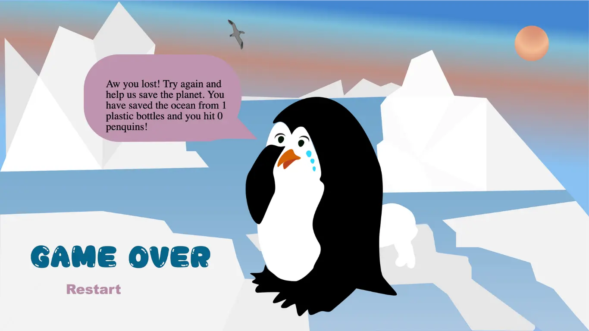
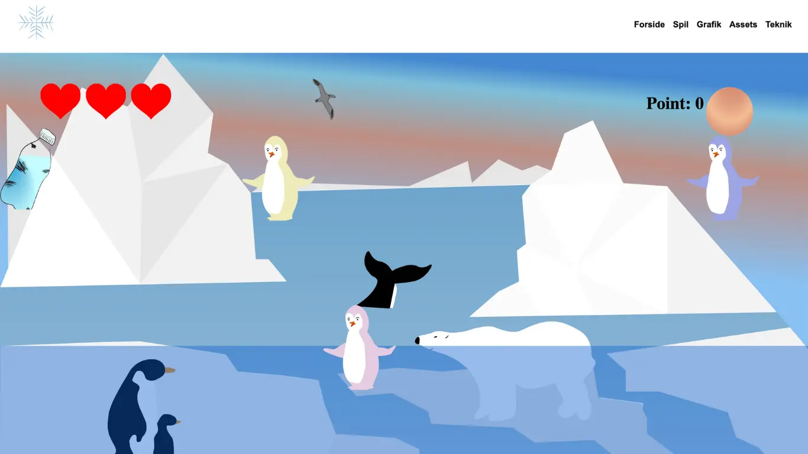
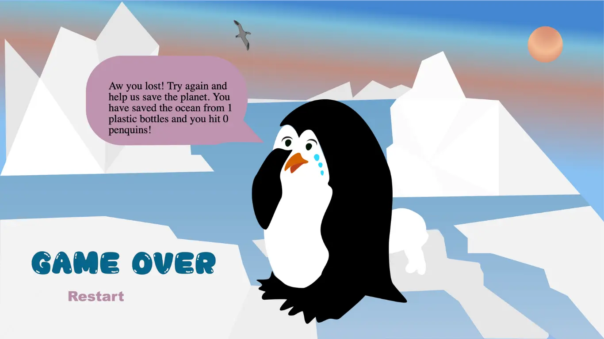
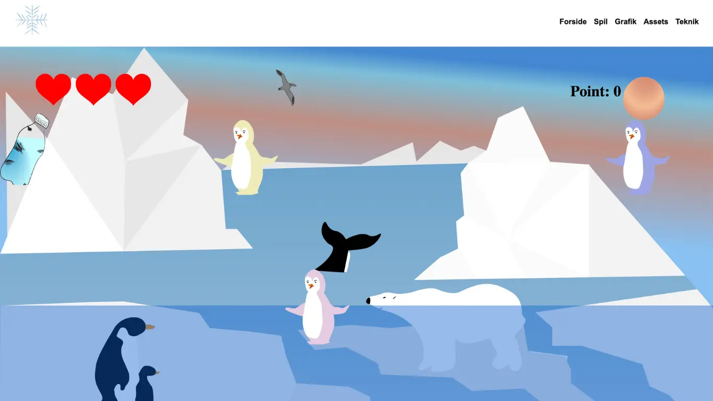

Følg med i min process nedenfor
Min portfolio 




Min website tager meget udgangspunkt i min egen stil så jeg har forsøgt at kombinere det med en funktionel opbygning. Min research og idé generering har jeg gjort på Pinterest samt ved brug af desk research.
Primært disse tre websites hvor jeg har taget inspiration fra forskellige features.
For eksempel scrolle-effekten, hvor den ene side scroller mens den anden står fast: https://www.rudolphcare.com/da/om/om-rudolph-care/
Designet hvor der er sat en baggrundsfarve under billederne, for at få samme udtryk på alle mine undersider: https://www.lessestudio.com/portfolio/ace
Footeren som er stilren og enkel I designet: https://www.studioetta.co
wireframes hi fi og lo fi